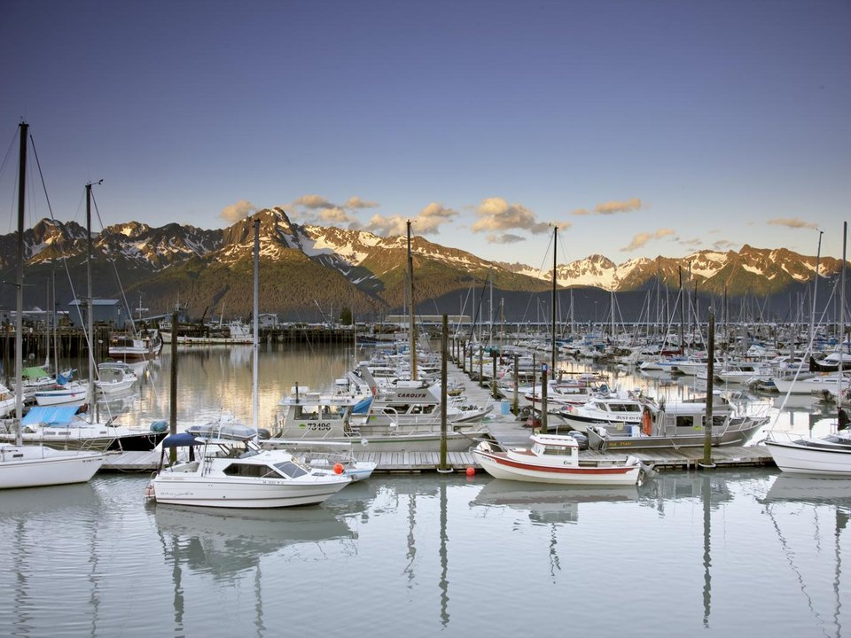

Seward · Lodge
Seward Windsong Lodge
A lodge in the woods near Exit Glacier road.
Official details for Seward Windsong LodgeTidewater glaciers and whales.
Seward sits at the head of Resurrection Bay, surrounded by mountains, and is the jumping-off point for Kenai Fjords National Park. Fly in from Anchorage through the mountains, stay at a lodge in the trees, take a day cruise to see tidewater glaciers calving, whales, puffins and sea lions, walk to Exit Glacier and visit the Alaska SeaLife Center.

Time illustration: direct distance at 150 KTAS plus 15 minutes for departure and arrival, matching the discovery page. Use ForeFlight for your actual flight plan.
Check the weekend weather at both ends → Flight category, your minimums and the crosswind on the best runway.
PAWD, Seward, is a non-towered state airport at 28 feet with a 4,249-foot main runway at the head of Resurrection Bay, a few minutes from the harbor.
Seward Airport, Seward, AK
Mountains close around the bay; winds can be strong and gusty, and the pass from Anchorage often has low ceilings. No live fuel price is shown.
Southcentral Alaska flying: fast-changing weather, low ceilings in mountain passes, strong winds on the coast and over glaciers, long summer daylight and short winter days. Carry survival gear, file a flight plan and check the FAA weather cameras. From the lower 48 this is an expedition, not a weekend: the usual route is the Alaska Highway through Canada (customs, eAPIS and Canadian survival-equipment rules), roughly a week each way. Most visitors are Alaska-based pilots, or fly commercially and book local air taxis and flightseeing.
Rates and availability need travel dates. Summer books early.
A lodge in the woods near Exit Glacier road.
Official details for Seward Windsong LodgeAn island lodge in Resurrection Bay, reached by boat.
Official details for Kenai Fjords Wilderness LodgePrices and availability for your dates, through our partner Stay22. This is an affiliate link: we may earn a commission at no cost to you. The picks above are never paid.
Reserve weekend dinners.
Seafood overlooking the small-boat harbor.
Official details for Ray’s WaterfrontCafés and seafood in town.
Seward Chamber for More restaurantsCalm days make the best cruises.
This prototype links to the local visitor site. It does not yet match events to your travel dates.
A famous footrace up and down the mountain above town.
Seward Chamber for Mount Marathon RaceWhales and glaciers.
Major Marine Tours for Cruise seasonA long-running fishing derby.
Seward Chamber for Silver Salmon DerbyCheck the local calendar when choosing a weekend, and confirm dates and tickets with the organizer.
A sample Seward weekend. Written for Alaska-based pilots and visitors already in Alaska. No bookings or availability confirmed.
Land at PAWD early.
A half-day glacier and wildlife cruise.
The SeaLife Center, then back to the airport.
Land at PAWD, subject to weather and your actual flight plan.
The SeaLife Center.
Dinner at Ray’s.
A glacier and wildlife cruise.
Exit Glacier.
Dinner in town.
A walk along the bay.
Allow time at the airport or dock.
Alaska weather changes fast; keep a margin and an alternate.
Exit Glacier.
A longer fjords cruise.
Dinner at Ray's Waterfront.
These details make the difference between an appealing list and a usable getaway.
Lodge, then a cruise.
About 65 nm south through the mountains.
Outer-coast cruises can be rough; pick a calm day.
June to August.
Picks and links reviewed by WingAway Weekends. Hours, prices, menus and availability change often, so confirm directly with each place before booking. Spotted something out of date, or have a favorite we missed? Email us at hello@wingawayweekends.com.
WingAway Weekends helps you discover the destination. Use ForeFlight and current official aviation information for route, performance, weather, NOTAMs and preflight decisions. Flight planning and PIC responsibility stay with the pilot.